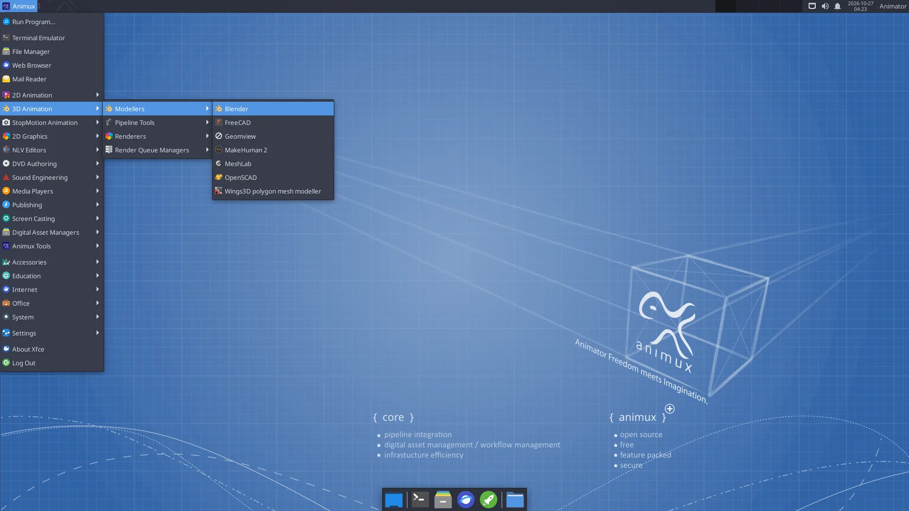

Click Animux at the top left. The menu is sorted by production job, the way the original Animux was, not by program type.


| Category | Inside | Most useful |
|---|---|---|
| 2D Animation | 2D animation programs | Pencil2D, Synfig Studio, TupiTube |
| 3D Animation → Modellers | 3D modelling and character programs | Blender, MakeHuman 2, FreeCAD, Wings 3D, MeshLab |
| 3D Animation → Pipeline Tools | Studio scene and format tools | Gaffer, USD View |
| 3D Animation → Renderers | Renderers with a window | POV-Ray, appleseed (others: see Renderers) |
| 3D Animation → Render Queue Managers | Render farm | Flamenco Manager, Farmerjoe |
| StopMotion Animation | Frame-by-frame camera capture | Stopmotion |
| 2D Graphics → Bitmap Editors | Painting and photo editing | Krita, GIMP, MyPaint, mtPaint, GrafX2 |
| 2D Graphics → Vector Editors | Drawing with shapes | Inkscape |
| 2D Graphics → Image Viewers | Look at pictures and renders | Ristretto, Image Viewer, DJV |
| 2D Graphics → Ancillary Tools | Other graphics tools | Upscayl, colour calibration, scanning |
| NLV Editors | Video editing | Kdenlive, OpenShot, Cinelerra-GG, Avidemux |
| DVD Authoring → Production | Converting and finishing video | HandBrake, MKVToolNix, subtitle editors |
| DVD Authoring → Backup | Burning discs | K3b |
| Sound Engineering | Recording, music, audio setup | Audacity, Ardour, LMMS, Hydrogen, MuseScore, QjackCtl, volume control |
| Media Players | Watch and listen | VLC, Parole |
| Publishing | Storyboards, PDF, print | Scribus, PDF Arranger, Document Viewer |
| Screen Casting | Screenshots | Screenshot |
| Digital Asset Managers | Find and manage files and backups | File manager, Catfish search, Disk Usage Analyzer, Timeshift |
| Animux Tools | Animux's own tools | Animux Guide, Self-Test, Sample Scenes, Install DaVinci Resolve |
| Accessories, Education, Internet, Office, System, Settings | The usual desktop programs | Calculator, text editor, Firefox, Synaptic, Settings Manager |
Can't find a program?
Press Alt+F2 and type part of its name, or use the software list, which says where each program is in the menu.